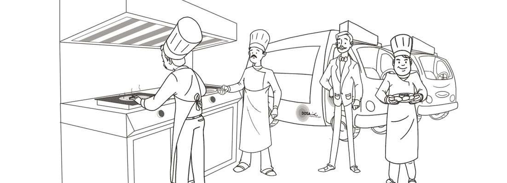

CATERING AND SERVICES
Dosa Inc started out with the unique concept of Food Trucks and built it into a successful Onsite Food Services Company – providing retail services to residential neighbourhoods and companies to catering options. The cuisine is authentic, home-styled Indian, with recipes culled from our mothers’ kitchens. We are currently a team of 14 people, 4 trucks, 1 catering van & 2 fully fitted out base kitchens in Delhi and Gurgaon.
PARTY CATERING

We have become the go to caterers for house warming parties or a havan for wedding or any religious / auspicious occasion. We also specialize in kids birthday parties, as well as kitty parties with live counters to serve an untapped market of small to medium sized gatherings. Our ability to make this happen indoors and outdoors
RETAIL SERVICES

Our trucks are fully mobile kitchens on wheels that serve fresh South Indian food on a retail basis at residential neighbourhoods as well as in company cafeterias. Our live- counters make our food a compelling, must-have experience.
CORPORATE CATERING
We go to different offices / institutional locations to serve fresh & flavorful food during the weekdays. We specialize in indoor and outdoor Live Counters; Breakfast and lunch packs for seminars and conferences and also provide Lunch Services / Meal Plans (Thali services)
BULK ORDER

For pick up or delivery of a bulk order from one of our locations, please order at least 24 hours in advance to check availability of items and feasibility of menu. We would require a complete address with location and contact person and time of delivery at least 48 hours in advance.